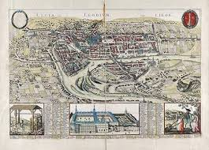

CityLoop Quest Liège


Liège naît d’un site de confluence, de passage et de hauteur. La Meuse offre une voie de circulation, les collines protègent et observent, les îles multiplient les traversées. Avant la ville médiévale, le territoire connaît déjà des occupations plus anciennes, visibles sous la place Saint-Lambert grâce aux vestiges de l’Archéoforum.
Le grand tournant symbolique se joue autour de Lambert, évêque assassiné au début du VIIIe siècle selon la tradition. Son culte attire pèlerins, religieux et pouvoirs. Autour du sanctuaire se construit un noyau urbain dont la future cathédrale Saint-Lambert sera le centre spirituel et politique.
Au Moyen Âge, Liège devient capitale d’une principauté ecclésiastique. Les princes-évêques gouvernent un territoire complexe, entre Empire, voisins bourguignons, ambitions françaises et libertés urbaines. Cette situation donne à la ville une personnalité très particulière : pieuse, marchande, parfois rebelle, souvent jalouse de ses droits.
Regarder Liège aujourd’hui, c’est donc accepter une ville construite par strates. Une place moderne peut cacher une cathédrale disparue, une rue commerçante peut longer une ancienne collégiale, un palais judiciaire peut être l’héritier d’un pouvoir religieux. Cette profondeur donne à la balade son relief.